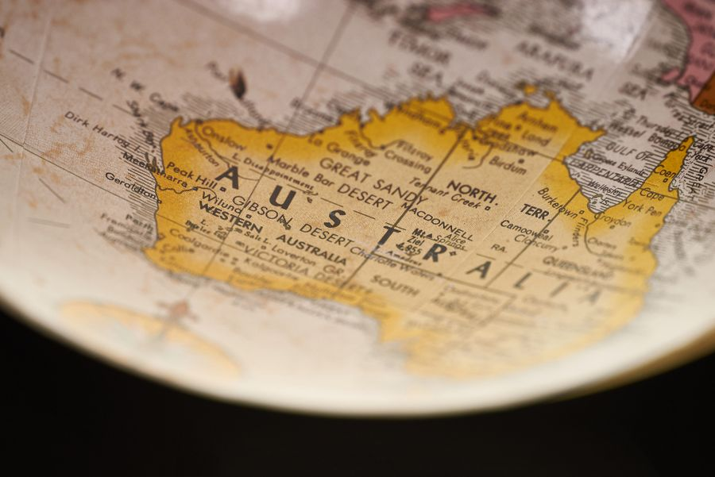

エジプトとカタール、首長のカイロ訪問中に地域の緊張緩和と経済・エネルギー関係の強化を呼びかけEgypt and Qatar call for regional de-escalation, stronger economic and energy ties during Emir’s Cairo visitエジプトのアブドルファッターフ・アッ＝シーシ大統領は、すべての当事者がガザ地区での停戦合意の履行に取り組み、その流れを確保する必要性を強調した
エジプトとカタール、首長のカイロ訪問中に地域の緊張緩和と経済・エネルギー関係の強化を呼びかけEgypt and Qatar call for regional de-escalation, stronger economic and energy ties during Emir’s Cairo visitエジプトのアブドルファッターフ・アッ＝シーシ大統領は、すべての当事者がガザ地区での停戦合意の履行に取り組み、その流れを確保する必要性を強調した ヒシャム・タラート・ムスタファ氏、アフメド・エズ氏、ヤシン・マンスール氏、環状道路事故の犠牲者の家族に3000万エジプト・ポンドを寄付Hisham Talaat Moustafa, Ahmed Ezz, Yassin Mansour donate EGP 30m to families of Ring Road accident victimsエジプトを代表する実業家3人が、大カイロの環状道路で発生した火災で死亡し、負傷した人々の家族を支援するため、合わせて3000万エジプト・ポンドを寄付すると表明した
ヒシャム・タラート・ムスタファ氏、アフメド・エズ氏、ヤシン・マンスール氏、環状道路事故の犠牲者の家族に3000万エジプト・ポンドを寄付Hisham Talaat Moustafa, Ahmed Ezz, Yassin Mansour donate EGP 30m to families of Ring Road accident victimsエジプトを代表する実業家3人が、大カイロの環状道路で発生した火災で死亡し、負傷した人々の家族を支援するため、合わせて3000万エジプト・ポンドを寄付すると表明した イラン、危険な環境での捜索・救助活動用のロボット犬を開発Iran develops robotic dog for search-and-rescue operations in hazardous environmentsイランの技術者らは、危険な環境における捜索・救助活動を支援するよう設計された四足歩行のロボット犬を開発した。メール・ニュース通信社、TV BR
イラン、危険な環境での捜索・救助活動用のロボット犬を開発Iran develops robotic dog for search-and-rescue operations in hazardous environmentsイランの技術者らは、危険な環境における捜索・救助活動を支援するよう設計された四足歩行のロボット犬を開発した。メール・ニュース通信社、TV BR ASEANのフェローたち、モスクワのATOMミュージアムでロシアの原子力産業を探るASEAN fellows explore Russia’s nuclear industry at Moscow’s ATOM MuseumASEAN諸国からのフェローたちは、InteRussi…の一環として、ロシアの原子力産業に特化した展示を見るため、モスクワのVDNKhにあるATOMミュージアムを訪れた
ASEANのフェローたち、モスクワのATOMミュージアムでロシアの原子力産業を探るASEAN fellows explore Russia’s nuclear industry at Moscow’s ATOM MuseumASEAN諸国からのフェローたちは、InteRussi…の一環として、ロシアの原子力産業に特化した展示を見るため、モスクワのVDNKhにあるATOMミュージアムを訪れた ロシアとカザフスタン、二国間決済の96％を自国通貨で実施とプーチン氏Russia and Kazakhstan conduct 96% of bilateral settlements in national currencies, Putin saysロシアとカザフスタンは二国間決済の約96％を自国通貨で行っていると、ロシアのウラジーミル・プーチン大統領が会談で述べた
ロシアとカザフスタン、二国間決済の96％を自国通貨で実施とプーチン氏Russia and Kazakhstan conduct 96% of bilateral settlements in national currencies, Putin saysロシアとカザフスタンは二国間決済の約96％を自国通貨で行っていると、ロシアのウラジーミル・プーチン大統領が会談で述べた AIに作品を盗まれる恐れから、アーティストたちがInstagramとFacebookをやめているArtists are quitting Instagram and Facebook over fears AI will steal their work英国の水彩画家マティ・バーナムは、2024年に自身のイラストになりすましたPinterestアカウントを発見したと述べた。そのアカウントはAI生成の…を作成した
AIに作品を盗まれる恐れから、アーティストたちがInstagramとFacebookをやめているArtists are quitting Instagram and Facebook over fears AI will steal their work英国の水彩画家マティ・バーナムは、2024年に自身のイラストになりすましたPinterestアカウントを発見したと述べた。そのアカウントはAI生成の…を作成した プーチン氏は核兵器を使用せず「自制」を示した、とクシュナー氏Putin showed ‘restraint’ by not using nuclear weapons, Kushner saysロシアのウラジーミル・プーチン大統領は、ウクライナとの紛争で核兵器を使用しなかったことで「自制を示した」と、ホワイトハウスの特使ジャレッド・クシュナー氏が述べた。
プーチン氏は核兵器を使用せず「自制」を示した、とクシュナー氏Putin showed ‘restraint’ by not using nuclear weapons, Kushner saysロシアのウラジーミル・プーチン大統領は、ウクライナとの紛争で核兵器を使用しなかったことで「自制を示した」と、ホワイトハウスの特使ジャレッド・クシュナー氏が述べた。 アメリカ人、今感謝祭でガソリン代に約10億ドル多く支出へAmericans to spend nearly $1 billion more on gas this Thanksgivingニューヨーク ― 感謝祭の週末に車で出かけるアメリカ人は、悪天候だけでなく、イラン戦争を絶えず思い起こさせる高騰した…にも対応しなければならない。
アメリカ人、今感謝祭でガソリン代に約10億ドル多く支出へAmericans to spend nearly $1 billion more on gas this Thanksgivingニューヨーク ― 感謝祭の週末に車で出かけるアメリカ人は、悪天候だけでなく、イラン戦争を絶えず思い起こさせる高騰した…にも対応しなければならない。 トランプ氏の中間選挙での大敗も、キューバへの野望は衰えず。「大統領」ルビオ氏も同様Trump’s midterms debacle hasn’t dimmed his designs on Cuba. Or those of ‘President’ Rubioキューバ・ハバナ発――ドナルド・トランプ米大統領が米中間選挙で受けた歴史的な大敗は、トランプ氏が抱くある野望への熱意をどうやら衰えさせていないようだ。
トランプ氏の中間選挙での大敗も、キューバへの野望は衰えず。「大統領」ルビオ氏も同様Trump’s midterms debacle hasn’t dimmed his designs on Cuba. Or those of ‘President’ Rubioキューバ・ハバナ発――ドナルド・トランプ米大統領が米中間選挙で受けた歴史的な大敗は、トランプ氏が抱くある野望への熱意をどうやら衰えさせていないようだ。 TMGとタメル・ホスニー、環状道路の惨事を受けマディナティ公演を12月4日に延期TMG, Tamer Hosny postpone Madinaty concert to 4 December following Ring Road tragedyタラアト・ムスタファ・グループ（TMG）とエジプトの歌手タメル・ホスニーは、…の家族への連帯を示すため、マディナティ公演を12月4日（金）に延期した。
TMGとタメル・ホスニー、環状道路の惨事を受けマディナティ公演を12月4日に延期TMG, Tamer Hosny postpone Madinaty concert to 4 December following Ring Road tragedyタラアト・ムスタファ・グループ（TMG）とエジプトの歌手タメル・ホスニーは、…の家族への連帯を示すため、マディナティ公演を12月4日（金）に延期した。 アル＝ワッラークの悲劇を受け、ワフド党副党首が責任追及と危険物輸送の抜本的改革を要求Wafd Party deputy leader demands accountability and overhaul of hazardous transport following Al-Warraq tragedyワフド党副党首で上院議員のハゼム・アル＝ジェンディ氏は、約31人の命を奪ったアル＝ワッラーク環状道路の壊滅的な火災が…と強調した
アル＝ワッラークの悲劇を受け、ワフド党副党首が責任追及と危険物輸送の抜本的改革を要求Wafd Party deputy leader demands accountability and overhaul of hazardous transport following Al-Warraq tragedyワフド党副党首で上院議員のハゼム・アル＝ジェンディ氏は、約31人の命を奪ったアル＝ワッラーク環状道路の壊滅的な火災が…と強調した 世界的な課題にもかかわらず経済は成長を続けている――首相Economy continues to grow despite global challenges – PMムスタファ・マドブーリ首相は、世界情勢が続く中でもエジプト経済は成長を達成し続けていると述べた。政府は力を入れていると強調した…
世界的な課題にもかかわらず経済は成長を続けている――首相Economy continues to grow despite global challenges – PMムスタファ・マドブーリ首相は、世界情勢が続く中でもエジプト経済は成長を達成し続けていると述べた。政府は力を入れていると強調した… エジプト、2027年4月から主要な考古学遺跡の入場料を引き上げへEgypt set to raise entry fees for key archaeological sites starting April 2027エジプト旅行代理店協会（ETAA）は、最高考古評議会の承認を受け、複数の考古学遺跡の入場料の新たな改定を発表した。
エジプト、2027年4月から主要な考古学遺跡の入場料を引き上げへEgypt set to raise entry fees for key archaeological sites starting April 2027エジプト旅行代理店協会（ETAA）は、最高考古評議会の承認を受け、複数の考古学遺跡の入場料の新たな改定を発表した。 エジプト、エリトリアの主権と領土保全への全面的な支持を再確認Egypt reaffirms full support for Eritrea’s sovereignty, territorial integrity外務・国際協力・在外エジプト人担当大臣バドル・アブデルアッティ氏は、エリトリアの主権、統一、領土保全に対するエジプトの全面的な支持を改めて表明した。
エジプト、エリトリアの主権と領土保全への全面的な支持を再確認Egypt reaffirms full support for Eritrea’s sovereignty, territorial integrity外務・国際協力・在外エジプト人担当大臣バドル・アブデルアッティ氏は、エリトリアの主権、統一、領土保全に対するエジプトの全面的な支持を改めて表明した。
エジプトとカタールの外相が二国間関係と地域情勢を協議Egyptian, Qatari FMs discuss bilateral ties, regional developments外務・国際協力・在外エジプト人担当大臣バドル・アブデルアッティ氏は、2026年11月25日水曜日にカタールの首相…を迎えた。 エジプトとシェブロン、キプロスのアフロディーテ・ガス田の開発計画を検討Egypt, Chevron review development plans for Cyprus’ Aphrodite gas field石油・鉱物資源省と世界的なエネルギー企業シェブロンは、石油・鉱物資源大臣の後援の下、合同ワークショップを開催した。
エジプトとシェブロン、キプロスのアフロディーテ・ガス田の開発計画を検討Egypt, Chevron review development plans for Cyprus’ Aphrodite gas field石油・鉱物資源省と世界的なエネルギー企業シェブロンは、石油・鉱物資源大臣の後援の下、合同ワークショップを開催した。 検察、ワッラーク環状道路のタンク車火災を起こした疑いで運転手を拘束Prosecutors detain driver accused of causing Warraq Ring Road tanker fireエジプト検察庁は木曜日、カイロのワッラークの環状道路で水曜日に発生した燃料タンク車の火災事故を引き起こしたとして告発された運転手を拘束したと発表した。
検察、ワッラーク環状道路のタンク車火災を起こした疑いで運転手を拘束Prosecutors detain driver accused of causing Warraq Ring Road tanker fireエジプト検察庁は木曜日、カイロのワッラークの環状道路で水曜日に発生した燃料タンク車の火災事故を引き起こしたとして告発された運転手を拘束したと発表した。 ターキッシュ・エアラインズ、アフリカ・フライ・フェストのセールでカイロ―イスタンブール間往復運賃を$240から提供Turkish Airlines offers Cairo–Istanbul return fares from $240 in Africa Fly Fest saleターキッシュ・エアラインズは、アフリカ・フライ・フェストのキャンペーンを開始し、カイロ―イスタンブール間のエコノミークラス往復運賃を$240から提供している。同社が75周年を迎える中← トップページへ戻る
ターキッシュ・エアラインズ、アフリカ・フライ・フェストのセールでカイロ―イスタンブール間往復運賃を$240から提供Turkish Airlines offers Cairo–Istanbul return fares from $240 in Africa Fly Fest saleターキッシュ・エアラインズは、アフリカ・フライ・フェストのキャンペーンを開始し、カイロ―イスタンブール間のエコノミークラス往復運賃を$240から提供している。同社が75周年を迎える中← トップページへ戻る